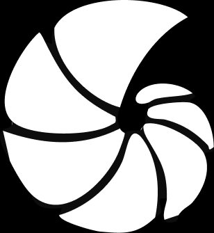

Protección que evoluciona.
Este no es un proyecto de cliente — es una creación propia, nacida en Bahía Blanca, ciudad con identidad marítima y costera. La inspiración vino del mar, de sus profundidades, de la fauna que lo habita desde antes que existiera el diseño.
En 2024 Bahía Blanca sufrió una inundación que marcó a la ciudad. Ese evento no quedó afuera del proyecto — se convirtió en su capa más profunda: la idea de una marca que resiste, que evoluciona, que emerge más fuerte después del agua. Como el nautilus.
El nautilus existe desde antes que el hombre.
Sobrevivió a todo porque supo evolucionar sin perder su esencia.
Eso es lo que esta marca tenía que ser.
El logo nace de la espiral del molusco — forma perfecta, inmutable, que evoca resiliencia y armonía natural. La paleta toma los azules del océano profundo con el dorado como acento de precisión premium. Todo construido con Adobe Color para máxima armonía cromática. El sistema fue diseñado para escalar: desde la señalética hasta las redes, desde la indumentaria hasta el merch.
Trajan Bold: fuerza, resiliencia, presencia icónica.
Conveys strength, resilience and iconic presence.
Montserrat Regular: claridad moderna, contraste sutil.
Conveys clarity, modernity and subtle contrast
that doesn't compete with the name.
La nueva identidad posiciona a Nautilus exactamente donde pertenece. Cada pieza comunica cuidado, precisión y sofisticación — atrayendo al cliente que busca un servicio a la altura de su vehículo y su estilo de vida.
Nada grita; todo sugiere.
Una marca que nació del mar y resiste como el animal que la inspira.
Este proyecto se realizó como mero ejercicio profesional. © 2025 Walter Ziegemann. Todos los derechos reservados.